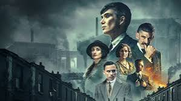

Contexto de Peaky Blinders
Peaky Blinders:
A Lei de Birmingham
Nas ruas escuras da Birmingham pós-guerra, a lei é ditada pela família Shelby. Sob o comando de Thomas Shelby, a gangue usa violência, lâminas e astúcia para transformar apostas ilegais em um império intocável.

Por que essa série é tão boa?
Uma aula de cinema em formato de série
Fotografia e Direção
Enquadramentos marcantes, uso impecável de luz e sombra e cenas em câmera lenta dignas das grandes telas.
Trilha e Ambientação
O contraste genial entre a Inglaterra dos anos 20 e o rock moderno cria uma atmosfera envolvente e única.
Atuações de Gala
Cillian Murphy e um elenco afiado entregam performances profundas, viscerais e memoráveis a cada episódio.
Banco de dados dos personagens